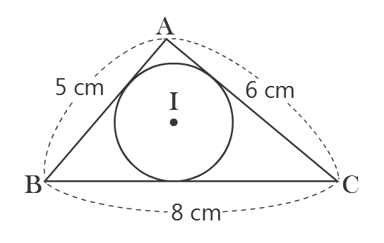
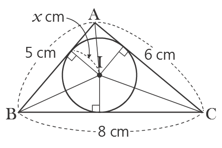
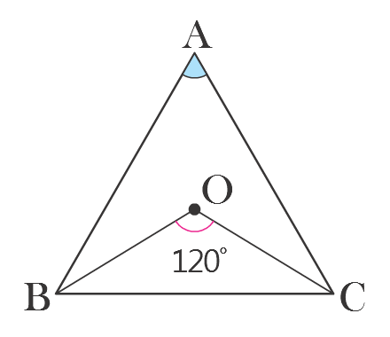
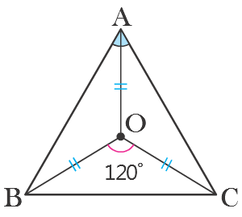
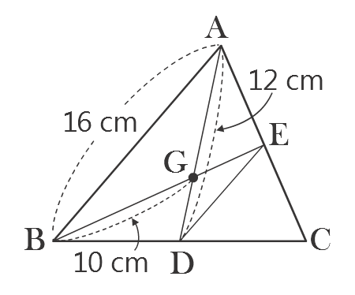
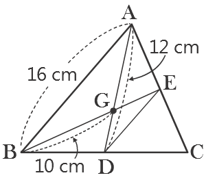

Tareas
Contenido
El punto I es el incentro. AB=5㎝, BC=8㎝, CA=6㎝ y en el caso de que el ancho del △ABC sea 19㎠, ¿cual es el largo del radio del circulo inscrito del △ABC?


Utilizando las propiedades del incentro obtener el radio del circulo inscrito
Por la razon de que la distancias desde el incentro hasta los tres segmentos son iguales, decimos que la longtitud de la radio del circulo inscrito del ㅿABC
ㅿABC=ㅿIAB+ㅿIBC+ㅿICA
=½×(5+8+6)×x=19(㎠)
x=2
=½×(5+8+6)×x=19(㎠)
x=2

El punto O es el circuncentro del △ABC, en el caso de que el ∠BOC=120˚, Obtener el tamaño del ∠A

Obtener el tamaño del angulo utilizando las propiedades del circuncentro
La distandia desde en circuncentro a los vertices del triangulo son iguales
2∠OAB+2∠OAC+2×30˚=180˚
∠OAB+∠OAC=60˚
∠A=60˚
∠OAB+∠OAC=60˚
∠A=60˚

El punto G es el baricentro de la masa del △ABC, obtener el perimetro del △GDE, cuando AB=16㎝, AD=12㎝, BG=10㎝.

Oobtener el perimetro del trianguloa utilizando las propiedades del baricentro
= El punto G es el baricentro del △ABC
GD = ⅓ AD = 4(㎝), GE = ½ BG = 5(㎝)
AE = EC, BD = DC por la propiedad de los segmentos que une el punto centro de los 2 lados del triangulo
DE = ½AB = 8(㎝)
Por esta razon, el perimetro del △GDE es GD + GE + DE = 4 + 5 + 8 = 17(㎝)
GD = ⅓ AD = 4(㎝), GE = ½ BG = 5(㎝)
AE = EC, BD = DC por la propiedad de los segmentos que une el punto centro de los 2 lados del triangulo
DE = ½AB = 8(㎝)
Por esta razon, el perimetro del △GDE es GD + GE + DE = 4 + 5 + 8 = 17(㎝)
